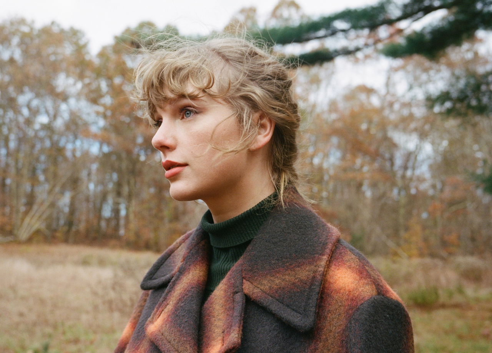

当《folklore》完成时，泰勒·斯威夫特与合作伙伴都很难停止写作，且无法停下创作音乐的脚步——这意味着他们有足够的材料，来制作另一张完整的
专辑。在此之前，泰勒·斯威夫特和制作人们站在民俗故事丛林的边界上做着一个选择：是转身回来，还是去这片音乐森林的更深处游历，而他们最终的选择
，是继续前进。
《evermore》的创作方式与泰勒·斯威夫特之前的专辑有所不同，她在创作该专辑之前，对待每张专辑都像对待每一个个体——这张完成了，就往下一张
去。但她在制作《folklore》的时候，同时也在创作《evermore》。在内容方面，由于泰勒·斯威夫特爱上了从那些虚构或非虚构的故事中找到的逃离现实
的感觉，以及人们拥抱这些梦境、悲剧及史诗版的爱与得失，并将这些情绪与生活勾连。
willow
champagne problems
gold rush
'tis the damn season
tolerate it
no body, no crime (feat. HAIM)
happiness
dorothea
coney island (feat. The National)
ivy
cowboy like me
long story short
marjorie
closure
evermore (feat. Bon Iver)

在《evermore》的封面照上，可以看见留着一头漂亮金发的泰勒·斯威夫特绑起了辫子，而该专辑的音乐则以独立摇滚乐去延展泰勒·斯威夫特上
一张作品《folklore》所奠基的风格。在整张专辑中，泰勒·斯威夫特继续《folklore》的民谣风格，尝试更加诗意的表达方式，让听众仿佛置身于民
谣森林的边缘，大步开启更神秘的音乐旅程。
《evermore》亦是《folklore》的“姐妹专辑”，制作精致，内容逃避现实。泰勒·斯威夫特再次与亚伦·德斯纳合作，挑战自己，在喜怒无常的
氛围中寻找新的维度，该专辑由精选民谣、丰富多彩的流行音乐以及乡村歌曲组成。泰勒·斯威夫特让自己的传记成为背景，放松了对叙事分辨率和情感
清晰度的需求，有时让音乐为她“说话”。
泰勒·斯威夫特的歌词写作能力在《evermore》上也有所提升，其以细节点画来描绘人物。订婚哀歌《champagne problems》以对句为开头，细致
地描绘出了一个想要摆脱困境的人。

| 获奖记录 | |||||||||||
|---|---|---|---|---|---|---|---|---|---|---|---|
| 时间 | 颁奖机构 | 授予奖项 | 获奖作品 | 结果 | |||||||
| 2021 | 第38届MTV音乐录影带奖 | 最佳流行歌曲 | 《willow》 | 提名 | |||||||
| 最佳导演 | 《willow》-泰勒·斯威夫特 | 提名 | |||||||||
| 最佳美术指导 | 《willow》-Ethan Tobman、 Regina Fernandez | 提名 | |||||||||
| 第49届全美音乐奖 | 最受欢迎流行专辑 | 《evermore》 | 获奖 | ||||||||
| 第64届格莱美奖 | 年度专辑 | 《evermore》 | 提名 | ||||||||